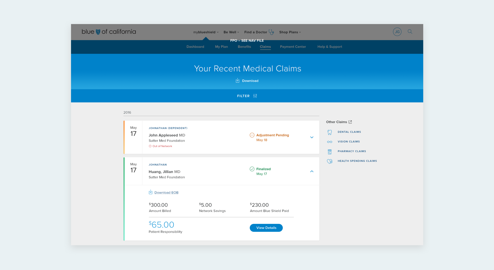
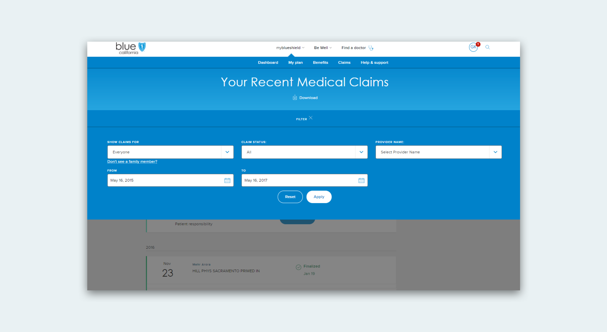
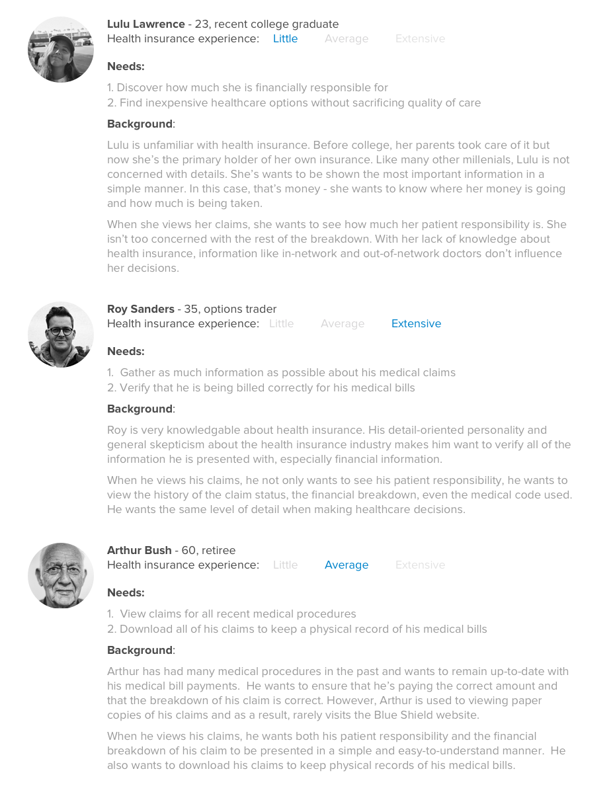
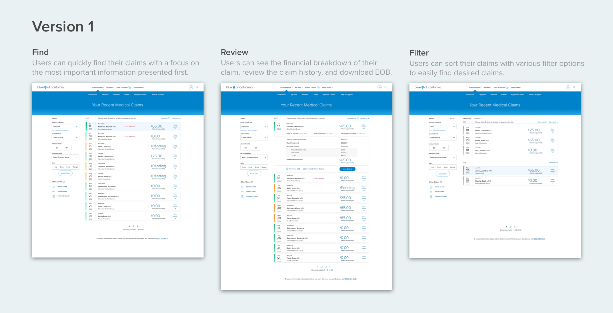
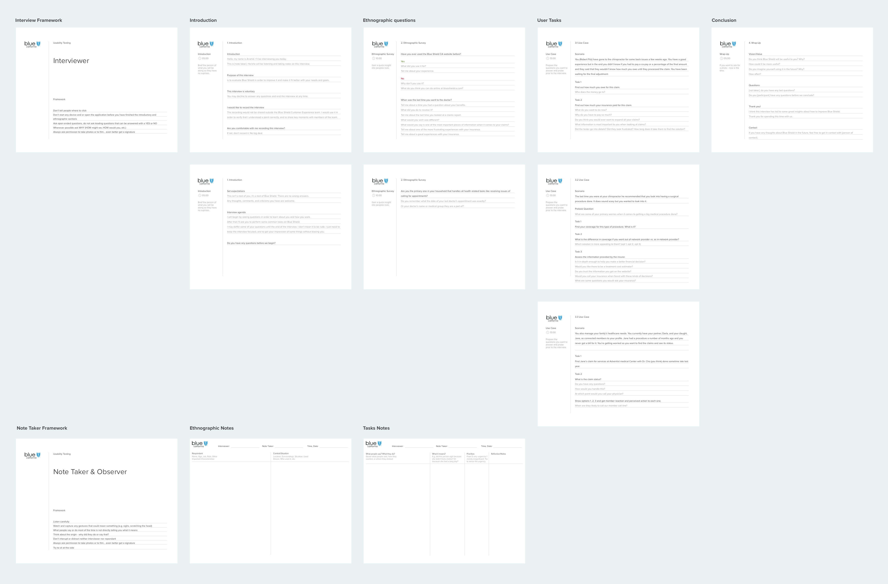
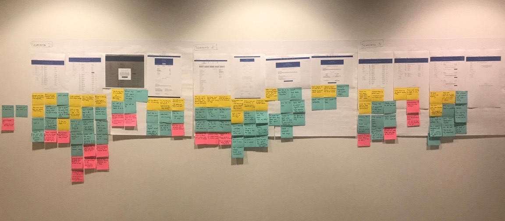
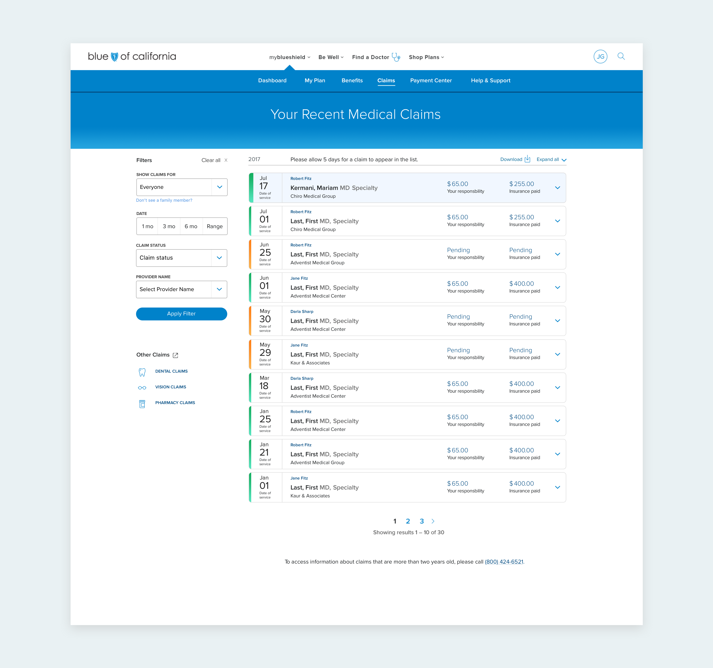
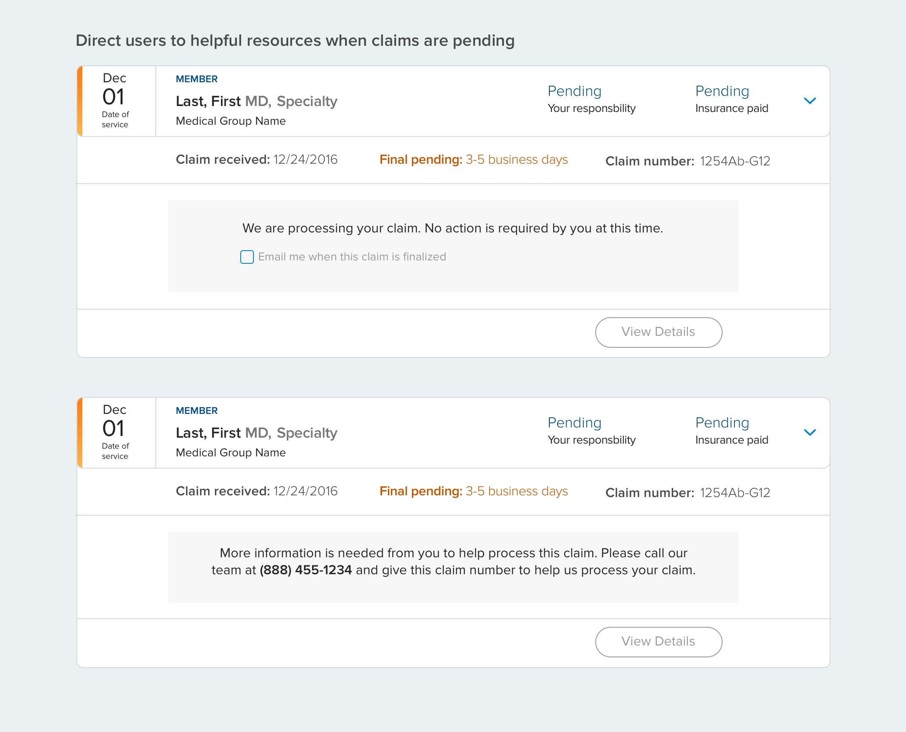
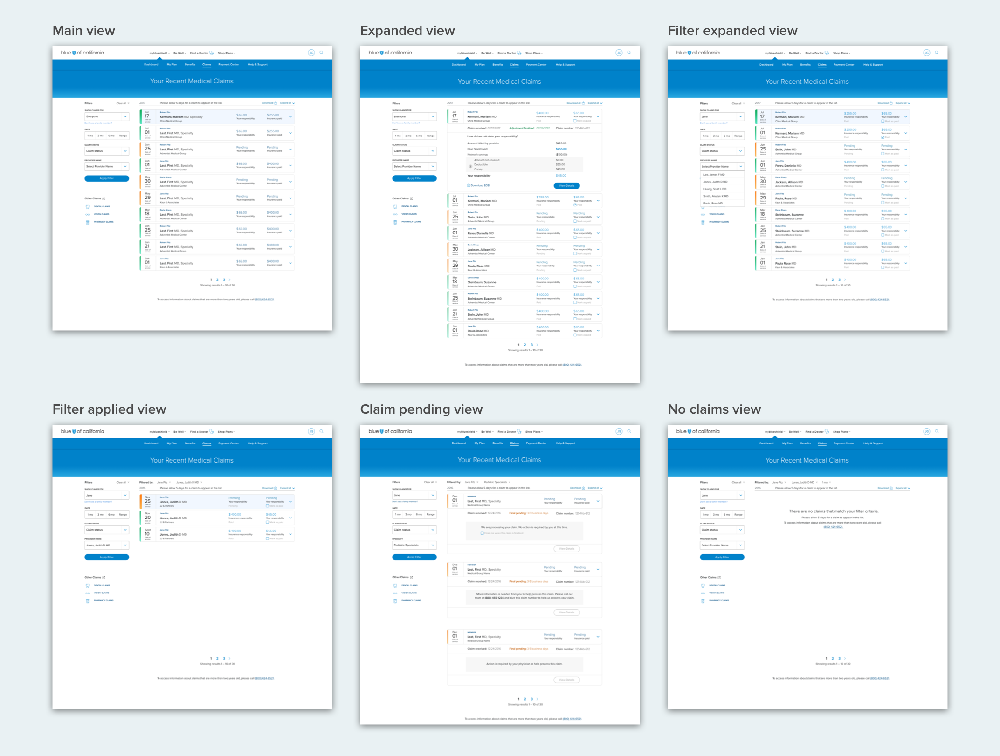

Product Design Intern, Jun - Aug 2017
This past summer, I worked at Blue Shield as a product design intern on the Customer Experience team. It was an incredible learning opportunity being a part of a team that has begun to define design's role within Blue Shield. My internship consisted of two main projects - the Claims and Benefits experience redesign and creating our Design Language System.
One of the most frustrating parts of the healthcare experience is paying medical bills. Trying to make sense of all the information involved in medical payments is a frustrating and discouraging exercise. We hoped to eliminate these frustrations for Blue Shield members by bringing clarity and simplicity to the Claims and Benefits experience.
Before diving into ideation, we sat down and reviewed data and user feedback that was collected by the marketing and engineering teams. This review uncovered some key findings that would guide our design decisions:
A more deatiled view of the original claims design:
 It became clear that the current design only added to users' confusion and frustrations with healthcare. After synthesizing the data, we identified objectives that would guide the project:
We had our first brainstorming session in early July where the senior interaction designer of my team and I ideated ways that Blue Shield could better assist people with their claims. We guided the brainstorm by dividing our users into three large categories based on age and healthcare experience. Here are some personas that helped guide our design decisions for the initial prototype:
After whiteboarding a few different concepts and user flows, we converged on an expandable-card design. We made the decision to skip wireframes because of the project's time constraints. Here are the key design decisions we made when creating our testable prototype:
Displaying features only as the user needs them simplifies their experience and helps them to immediately find claims that are important to them. We only displayed the most pertinent information in the non-expanded view: Date of Service and Patient Responsibility.
In order to increase the transparency between insurer, provider, and consumer, we created a financial breakdown in order for users to better understand how much they owe and where that amount comes from.
We moved the filter from its hidden default state to the left side bar of the screen and ordered the fields to match user behavior, improving availability and usability. We also displayed applied filters both in their original position and in an overview and allowed users to apply multiple filtering values at once.
In certain cases, users may have a lot of claims. Seeing all these claims on a single page can be daunting and overwhelming. Pagination creates a more pleasant and simple experience, allowing users to easily search and find claims.
We hoped to remove as much stress from the users. They are provided with relevant notes/instructions if there are any issues with their claims and will be notified if any action from member or provider side is needed.
After creating the initial screens, we wanted to get our designs in the hands of users ASAP. We quickly developed a clickable prototype using Invision, and recruited several users through Craiglist.
A few of the assumptions we planned to test were:
Using these assumptions, I developed the tasks and script that would be used for our two rounds of testing.
After each round of testing, we synthesized, prioritized, and incorporated feedback into our design changes.
Some important changes we incorporated into our second and final iterations were:
Here are the main screens that users will be interacting with most:
  In the last week of my internship, the designs were already being pushed to production and should be live within the upcoming month - a very exciting result for the project!
It's important that, after shipping the redesign, Blue Shield measure the effectiveness of our new solutions. One crucial metric to observe is the number of users that we lose at each screen within the overall claims flow. Before, there was a 50% drop in users from the landing page to the details page. Reviewing this data would provide us with meaningful metrics that can help inform our future design decisions, particularly where to focus our efforts within the flow of screens.